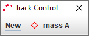
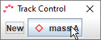
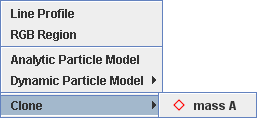
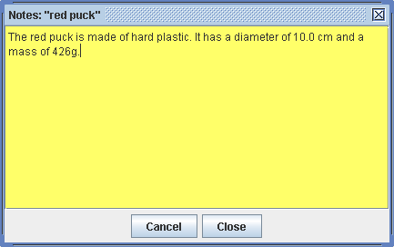

A track represents a video feature that evolves over time. All interactive elements in Tracker, including the axes, measuring tools and calibration tools, are tracks.
The position or shape of the feature in a single video frame is known as a step; thus, a track is a series of steps. Each step can be selected and manipulated with the mouse or keyboard. Some steps, like those for point mass tracks, have only a single moveable point, but others, like vector steps, have two end points plus a center handle point.
There are several types of user-defined tracks and three measuring tools. For detailed information on a specific type, see its corresponding help topic: point mass, center of mass, vector, vector sum, line profile, rgb region, kinematic particle model, dynamic particle model, two-body system, external model, tape measure, protractor and circle fitter.
Create a new track by selecting the desired track type from the Create button menu on the toolbar or the Track|New menu on the menu bar. A newly created track is automatically selected for marking.
Marking a track refers to the process of defining its position on each frame in the video clip. Most tracks can be marked either manually or automatically using autotracker. To mark manually, hold down the shift key to display the crosshair cursor (shown above at twice actual size) and click the mouse on the feature of interest as the video automatically steps through the video clip.
When marking point mass and vector tracks, you can hit the enter key instead of clicking the mouse to mark a step at the exact location of the previous step. This can be useful when marking an object at rest.
Marking is done in the main video view. For more accurate marking, magnify the image up to 8x using the zoom tool or by right-clicking on the video and choosing the desired zoom level.

There is some variability in marking requirements for the various track types. Vector and line profile tracks require dragging rather than clicking. Point mass and vector tracks expect every step to be marked, but offset origin, calibration point pair, line profile and rgb region tracks require marking only a single frame. Center of mass, vector sum, particle model and two-body system tracks are marked automatically.
When creating a new point mass, vector or rgb region, the video is reset to step 0 by default. You can prevent this reset by unchecking the Auto-reset to step 0 box in the Tracks tab of the preferences dialog.
If you prefer that the video not automatically step forward while marking you can uncheck the Autostep option in the Track menu for point mass and vector tracks.

Every track has a track button that shows its name, color and footprint, and a track menu with items for setting its properties. Track buttons are displayed on both the toolbar and the track control. Track menus can be accessed by (a) clicking the track button, (b) choosing the track from the Tracks menu on the menu bar, or (c) right-clicking the main video view and choosing the track from the Tracks popup menu.

The track control displays a track button for each user-created track. This makes it easy to select tracks and provides ready access to all track menus.
To show the track control, click the track control button on the toolbar.
Tracks can be marked or edited only when they are selected. The track button of the currently selected track is displayed on the lower tier of the toolbar.

To select a different track, click its track button on the track control or select one of its steps in the video view.



To deselect all tracks, double-click the video or background mat.
Make a duplicate copy of an existing track using the Clone item in the Create menu or the Track|New menu.

Copy a track from one tab to another by selecting the track and copying it to the clipboard using the Edit|Copy menu item, then pasting using the Edit|Paste item.
Since the tape measure and axes are tracks, they can also be copied. When pasted, they replace the existing tape or axes in the tab. When no track is selected, the entire tracker panel (video clip, coordinate system and tracks) is copied.
Tracks can also be imported directly from saved tracker files into an open tab using the File|Import menu item. For more information see tracker files.
Every track is identified by its name, color, footprint (visible shape) and notes (descriptive comments). Newly created tracks are assigned default values for the first three properties that depend on the type of track. For example, a point mass might initially be named ”mass A” and be drawn as a red diamond.
A track button showing the name, footprint and color of the track are displayed on the toolbar when the track is selected. To change the default values, click the track button and choose the Name..., Color... or Footprint item from the track menu.
To enter notes for a track, open the notes window by clicking the notes button  at the right end of the toolbar. or choosing Notes... from the track menu. As you enter information, the field turns yellow to indicate the changes have not yet been saved. To save the notes, click anywhere outside the window. To discard the changes, click the Cancel button.
at the right end of the toolbar. or choosing Notes... from the track menu. As you enter information, the field turns yellow to indicate the changes have not yet been saved. To save the notes, click anywhere outside the window. To discard the changes, click the Cancel button.

Hide a track by turning off the Visible property in its track menu. Or use the trails, labels, paths, positions, velocities and accelerations buttons on the toolbar to toggle the visibility of these features on all tracks.


To select a point, move the mouse cursor over it in the main video view. The cursor will become a hand pointer and the point will be identified in the bottom right message box. Click to select it. Note: To select a point while marking, release the shift key.
When a single point is selected, its track is selected, its editable properties (position, etc) are displayed on the toolbar, and it is identified with a square selection icon.
You can also select multiple points (Point Mass positions) for simultaneous dragging or deleting. Select multiple points by (a) control-clicking additional points or (b) right-dragging a box and choosing Select Points from the popup menu. Deselect previously selected points by (a) control-clicking them or (b) right-dragging a box and choosing Deselect Points from the popup menu.
To edit a step, select and drag one of its points. A selected point can also be nudged one pixel at a time with the arrow keys on the keyboard. Holding down the shift key increases the nudge distance.
Many tracks also provide input fields on the toolbar for setting positions or other properties of the selected step.
Delete a single or multiple steps by selecting them and hitting the delete key on the keyboard. Delete all steps for a track by choosing the Clear Steps item from its track menu.
Delete an entire track by name in the Edit|Delete menu or by choosing the Delete item in its track menu.
Clear all tracks in the current tab by choosing the Edit|Clear menu item.

Locking a track prevents any changes to its steps. Lock a track by turning on the Locked property in its track menu.